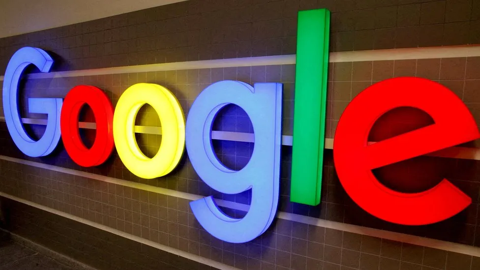

Google settles $5bn lawsuit for 'private mode' tracking
29 December 2023
By Annabelle Liang
Business reporter
Google has agreed to settle a US lawsuit claiming it invaded the privacy of users by tracking them even when they were browsing in "private mode".
The class action sought at least $5bn (£3.9bn) from the world's go-to search engine and parent company Alphabet.
Large technology firms have faced increased scrutiny of their practices in the US and beyond.
Lawyers representing Google and its users did not immediately respond to the BBC's requests for comment.
District Judge Yvonne Gonzalez Rogers put a scheduled trial for the case on hold in California on Thursday, after lawyers said they had reached a preliminary settlement. Judge Rogers had rejected Google's bid to have the case dismissed earlier this year, saying she could not agree that users consented to allowing Google to collect information on their browsing activity. The terms of the settlement were not disclosed. However, lawyers are expected to present a formal settlement for the court's approval by February 2024.
The class action, which was filed by law firm Boies Schiller Flexner in 2020, claimed that Google had tracked users' activity even when they set the Google Chrome browser to "Incognito" mode and other browsers to "private mode". It said this had turned Google into an "unaccountable trove of information" on user preferences and "potentially embarrassing things".
It added that Google could not "continue to engage in the covert and unauthorized data collection from virtually every American with a computer or phone". Google said it had been upfront about the data it collected when users viewed in private mode, even if many users assumed otherwise.
The search engine said the collection of search history, even in private viewing mode, helped site owners "better evaluate the performance of their content, products, marketing and more". Incognito mode within Google's Chrome browser gives users the choice to search the internet without their activity being saved to the browser or device. But the websites visited can use tools such as Google Analytics to track usage. Google faces other lawsuits challenging its search and digital advertising practices.
Earlier this month, the technology giant said it would pay $700m to settle a lawsuit brought by a group of US states that accused Google of quashing competition to its Play Store on Android devices.
This came days after it lost a US court battle to Fortnite maker Epic Games. The video game company sued Google in 2020 for unlawfully making its app store dominant over rivals.